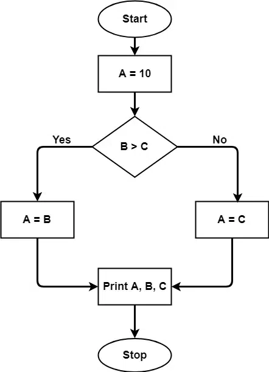

6.6 Cyclomatic Complexity / Control Flow Graphs
Cyclomatic complexity, developed by Thomas McCabe, is a software metric that measures the complexity of a program's control flow by counting the number of linearly independent paths through the source code. It is computed from the program's Control Flow Graph (CFG).
Lower cyclomatic complexity means simpler logic, easier maintenance, and fewer test paths. Higher values signal harder-to-understand code that may need refactoring and more thorough testing.
Control Flow Graph (CFG)
- A CFG is a directed graph representing the flow of control in a program.
- Nodes represent basic blocks — the smallest sequence of commands with no branches in or out except at the start and end.
- Edges represent possible transfers of control from one block to the next.
- Decision statements (
if,while,for,case) create branches — each branch adds independent paths. - If source code has no control-flow statements, cyclomatic complexity = 1 (single path).
- If source code has one
if(true/false), cyclomatic complexity = 2.

Cyclomatic complexity formulas
For a connected CFG with one entry point (single method/module, P = 1):
| Formula | Expression | Notes |
|---|---|---|
| Edge-node formula | V(G) = E − N + 2 | E = edges, N = nodes, P = 1 connected component |
| Region formula | V(G) = R + 1 | R = number of bounded regions (areas enclosed by nodes and edges) |
| Decision formula | V(G) = D + 1 | D = number of decision/predicate nodes (if, while, for, case, etc.) |
| General formula | V(G) = E − N + 2P | P = number of connected components |
CFG example
Consider this code segment:
A = 10
IF B > C THEN
A = B
ELSE
A = C
ENDIF
Print A
Print B
Print C- The CFG has 7 nodes and 7 edges.
- V(G) = E − N + 2 = 7 − 7 + 2 = 2.
- One decision (
IF B > C) → V(G) = D + 1 = 1 + 1 = 2 — consistent.
Steps to calculate cyclomatic complexity
- Construct the Control Flow Graph from the source code (identify nodes and edges).
- Identify all linearly independent paths through the graph.
- Apply any of the three equivalent formulas above.
- Use the result to design test cases — at least V(G) independent paths should be tested for path coverage.
Need and objectives
- Cyclomatic complexity assesses code maintainability and readability.
- It identifies high-risk modules that are more likely to contain errors.
- It determines the minimum number of test cases needed for basis path testing.
- It guides refactoring — modules with very high V(G) should be simplified or split.
- It quantifies control complexity to support better development decisions.
- It is faster to compute than Halstead metrics and is easy to apply automatically.
Interpretation of values
- Low V(G): Lower complexity — easier to maintain, test, and understand.
- High V(G): Higher complexity — harder to maintain and test; may require refactoring.
- McCabe suggested V(G) > 10 indicates a module that should be split or redesigned (common rule of thumb in industry).
- Cyclomatic complexity measures control complexity only — it does not reflect data complexity or overall software quality.
Use in testing
- V(G) equals the number of linearly independent paths — the minimum test cases for basis path testing.
- Each independent path should be executed at least once during white-box testing.
- Cyclomatic complexity helps testers focus on uncovered paths and improve code coverage.
- Using V(G) early in development reduces testing risk before integration.
GATE-style solved examples
Example 1 — Module with while and if (GATE CS 2004)
int module1(int x, int y) {
while (x != y) {
if (x > y) x = x - y;
else y = y - x;
}
return x;
}- Decision points: one
while+ oneif→ D = 2. - V(G) = D + 1 = 3 — answer (C).
Example 2 — Which expressions give V(G)? (GATE CS 2006)
For a connected CFG: P+1 and E−N+2 both equal V(G). Answer: (C) 2 or 4 — expressions (ii) E−N+2 and (iv) P+1.
Example 3 — True statements (GATE CS 2009)
- II. V(G) = number of decisions + 1 — TRUE.
- III. V(G) = number of linearly independent paths for path coverage testing — TRUE.
- Answer: (B) II and III.
Example 4 — Binary search segment (GATE CS 2015)
while (first <= last) {
if (array[middle] < search)
first = middle + 1;
else if (array[middle] == search)
found = True;
else last = middle - 1;
middle = (first + last) / 2;
}
if (first < last) notPresent = True;- Decision points:
while, firstif,else if, finalif→ D = 4. - V(G) = 4 + 1 = 5 — answer (C).
Limitations for exams
- Cyclomatic complexity measures control-flow complexity only — not data structure complexity or overall design quality.
- Nested conditional structures may be harder to understand than the V(G) number alone suggests.
- Simple comparisons can sometimes produce misleading complexity figures when predicates are trivial.
- It does not replace other metrics such as Halstead volume or function points for size estimation.
Q: Define cyclomatic complexity. Write three formulas for V(G). How is it used in testing?
Model answer points:
- McCabe metric; counts linearly independent paths through program control flow; computed from CFG.
- V(G) = E−N+2; V(G) = R+1 (bounded regions); V(G) = D+1 (decisions + 1).
- Minimum test cases for basis path testing = V(G); low value = simpler code; high value = refactor candidate.
- Control complexity only — not data complexity; white-box / structural testing metric.